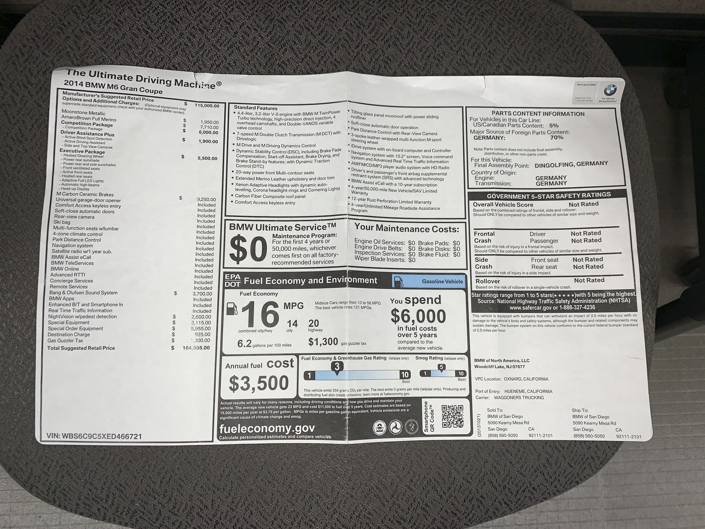

2014 BMW M6 Gran Coupé
This 2014 BMW M6 Gran Coupé with 10,000 original one-owner miles, zero accidents and still retaining 100% of its factory original paint, is a truly unique, one-of-a-kind, irreplaceable car.
-

- 
-

-

Ordered new in Moonstone with an Amaro Brown interior, its original MSRP was $165,000! Moonstone has a nice pearlescent effect which really “pops” and changes hue depending on how the ambient light hits it. Every normal option was specified including Carbon Ceramic Brakes, Competition Package and Bang & Olufsen Stereo.
{kind=link}
Special attention was devoted to the interior. BMW Individual trimmed this interior like no other! Virtually every possible surface which could be covered in leather is trimmed in leather!
Additionally, the interior is far more monochromatic than typical. Normally, an Amaro Brown interior has Black Carpet, Black Lower Door Panels and Door Pockets combined with Black plastic Lower-B Pillars, Black plastic Entry Thresholds + Black plastic Kick Panels, Black plastic trim around the Power Seat controls, and Black plastic on the sides of the Upper Dashboard. Normally, just behind the metal lever to open up a door while inside the car, there’s a piece of Black plastic.
In stark contrast, this car has far more attractive Amaro Brown Carpet, Amaro Brown Lower Door Panels and Door Pockets combined with Amaro Brown LEATHER Lower-B Pillars, and Amaro Brown LEATHER Entry Thresholds + Amaro Brown LEATHER Kick Panels and Amaro Brown LEATHER covering the trim around the Power Seat controls. The piece just behind the metal level to open a door while inside is trimmed in Amaro Brown LEATHER so as to exactly match the rest of the surrounding Amaro Brown Leather Door Panel, etc. The backs of the front seats are trimmed in Amaro Brown LEATHER, as are the various forward trim pieces underneath the forward portion of the front seats.
Additionally, the visors and mirror covers are entirely covered in Amaro Brown LEATHER.
The interior also features an Amaro Brown Alcantara headliner with a leather center section and Amaro Brown Alcantara rear shelf.
This car is also equipped with a one-off factory M Performance Steering Wheel with Shift Lights and factory Carbon Fiber trim over the steering wheel spokes. What makes this particular M Performance Steering Wheel a one-off is the fact it was trimmed in LEATHER by BMW Individual, rather than in the normal Alcantara. It's also equipped with a factory M Performance Carbon Fiber shifter. Additionally, the steering tube column trim along with both sides of the Upper Dashboard are trimmed in Black LEATHER.
The car is fitted from new with a 100% Titanium M Performance Exhaust System made by Akrapovič. The beautiful exhaust note is simply unrivalled. It completely transforms the car’s personality. It has zero-exhaust drone at any RPM, under any possible load. This exhaust has been combined with costly Noelle High-Flow Catalytic Converters from Germany, which not only add a bit of horsepower and responsiveness, and also audibly allow the sound of the turbos spooling up to be easily heard.
The handling and turn-in of this car have been noticeably transformed with Dinan Springs and Dinan Front & Rear Anti-Sway Bars. Much nicer than the previous factory Competition Package Springs and Front & Rear Anti-Sway bars.
Under the hood, Gruppe M Carbon Fiber Intakes have been fitted which also help a bit to unleash the natural induction sound. More importantly, it has benefitted from a full ESS Tuning remap. On a chassis dyno, it’s making well over 600hp to the rear wheels.
The ESS Tuning Remap is far superior to the Dinan Piggyback system I initially had. The Piggyback was developed in the very early days of the F10/F11/F12 generation before anyone was able to successfully crack the DME Motronic source codes. The problem with the Piggyback is that there’s a slight delay/lag/stumble when asking the car to accelerate hard, due to the time required for things to adapt/calibrate to the acceleration command (i.e. by its very nature, the Piggyback has to “trick” the factory Motronic).
In stark contrast, the ESS Tuning Remap was possible once the factory DME Motronic was finally cracked. The result is ZERO lag/delay/hesitation, etc. With the ESS Tuning Remap, acceleration is instantaneous!
When driving relaxed in Automatic mode on the freeway, it’s a joy to simply floor it! As soon as the DCT gearbox kicks down a couple of gears in virtually no time, the car pulls to crazy triple-digit speeds in a positively frighteningly fast manner! It’s the ultimate Q-Ship Sleeper!
Lastly, the car is fitted with a $55,000 aftermarket stereo system which produces 3500 watts, and is capable of playing WAV, ALAC and FLAC-type Lossless digital files. However, with the factory Bang & Olufsen Speaker Grilles still in place, the stereo system is totally inconspicuous.
The audio system consists of 7 Dynaudio E430 Mids and 7 MD102 tweeters, 2 x Pioneer 8 in Midbass drivers and 2 x JL12W6V3 subs there is an Audison Bit One Processor, an Audison Bit Play High Def 2 TB SSD music player with three Audison voice amplifiers at 3500 watts of Audison power. Other than subwoofers in the trunk, all equipment is either behind factory grills or trimmed so it’s not visible. During the course of installation sound deadening was applied to the doors, the rear shelf, and the trunk to offset and road noise or resonances from the audio system. Labor alone on the stereo was over 120 hours.
The radar system consists of a Bel / Escort Stir Plus integrated radar system with the display behind the glass in the mirror it is combined with a Blinder HP905 4 Laser Shifter System with the escort live option and a Zaon aircraft detection unit modified with the display in a custom panel in the dash. Then, La Jolla Audio added an option unavailable at time of order: a Factory BMW 6 DVD changer in the glovebox. Between the audio system, the radar system and the DVD system, the investment was in excess of $55,000.00. The audio system is by far one of the best sounding systems La Jolla Audio has ever built with plenty of dynamic headroom and zero distortion which makes it sound incredible at low and high volumes.
In summary, much thought and expense has been put into this car. Its performance, handling and exhaust note are astonishing. However, its interior and sound system rival the nicest Rolls-Royce or Bentley extant, etc. And in general, an M6 Gran Coupé ranks right up there with the most attractive, nicest looking four-door sedans ever built.